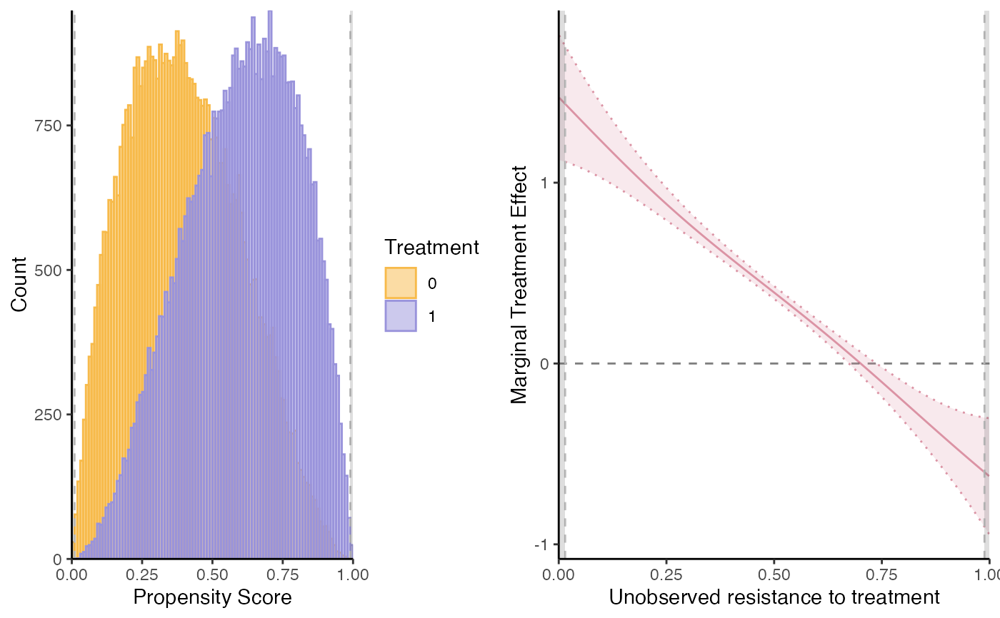
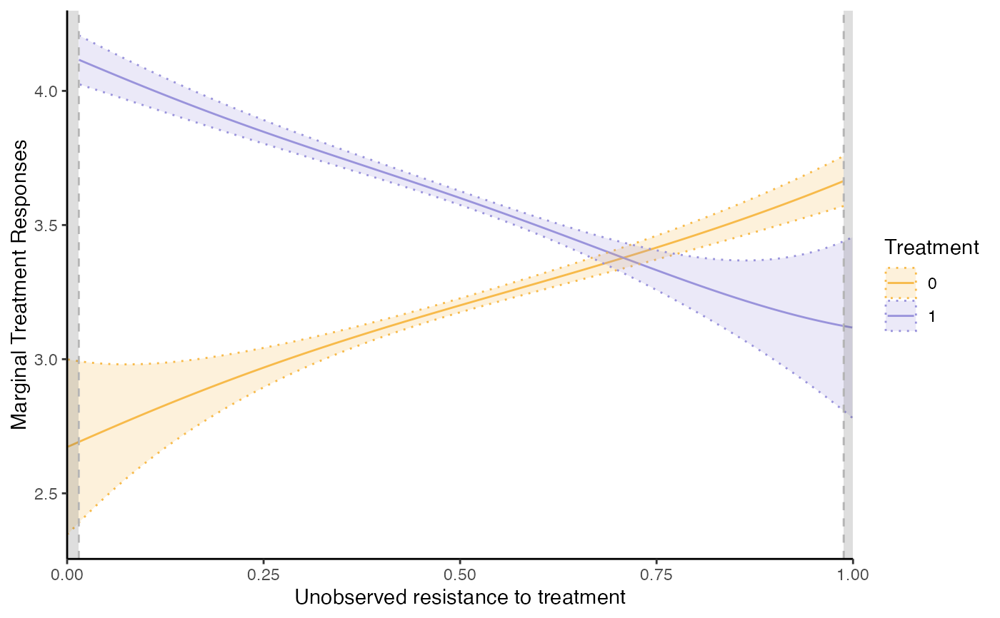

Semi-IV Regression Function
semiivreg.RdSemi-IV regression function from Bruneel-Zupanc (2024). Syntax inspired from ivreg. Returns MTE and MTR curves with confidence intervals. The estimation is almost instantaneous (a few seconds at most).
By default, return analytic standard errors not accounting for the fact that the propensity score is estimated in a first stage in semiivreg.
Use semiivreg_boot to obtain 'correct' bootstrapped confidence intervals (takes a bit longer).
Usage
semiivreg(formula, data, propensity_formula=NULL, propensity_data = NULL,
ref_indiv =NULL, firststage_model = "probit",
est_method = "locpoly", # "locpoly", "sieve", or "homogenous".
se_type = "HC1",
bw0 = NULL, bw1 = NULL, bw_y0 = NULL, bw_y1 = NULL, bw_method = 1/5,
kernel="gaussian",
pol_degree_locpoly1 = 1, pol_degree_locpoly2 = 2,
pol_degree_sieve = 5, conf_level = 0.05,
common_supp_trim=c(0,1), trimming_value=NULL, automatic_trim=FALSE,
plotting=TRUE, print_progress=FALSE)
semiivreg_boot(formula, Nboot=500, data, propensity_formula=NULL, ref_indiv =NULL,
firststage_model="probit", est_method = "locpoly", se_type="HC1",
bw0 = NULL, bw1 = NULL, bw_y0 = NULL, bw_y1 = NULL, bw_method = "rule-of-thumb",
pol_degree_locpoly1 = 1, pol_degree_locpoly2 = 2,
common_supp_trim=c(0,1), trimming_value = NULL,
automatic_trim = FALSE, plotting=TRUE, conf_level = 0.05, CI_method = "curve", weight_var)
semiiv_predict(semiiv, newdata, seq_v=NULL)Arguments
- formula
Formula of the regression, of the form outcome ~ treatment | semi-iv0 | semi-iv1 | commoncovariates.
The treatment variable should be binary (0, 1).
covariates with an effect that differs on D=1 and D=0 should be included in each semi-iv0 and semi-iv1.
with est_method = "locpoly": cannot restrict covariates to have common effects (not implemented), socommoncovariateswill just be estimated as having generally a different effect on Y0 and Y1.- data
Dataframe containing the data.
- propensity_formula
Formula for the 1st stage. If nothing specified, just runs a probit of d ~ semi-iv0 + semi-iv1 + covariates (removing the redundant variables).
- propensity_data
Data used to compute the 1st stage; ignore by default set to NULL and = data. Mainly useful for internal bootstrap function is the first stage formula is different from the default one.
- ref_indiv
Specify the reference individual (in terms of covariates) at which we will evaluate the function.
By default takes the average value for all the covariates (on the trimmed dataset) to compute the average estimate. Remark: for factors, the average is computed on the dummy variables to get the proper average effect.- firststage_model
By default, the first stage is a probit model. Can specify another model (e.g., "logit").
- est_method
Estimation method: default is "locpoly" for Robinson (1988) double residual regression for partially linear model. Other options include "sieve" to specify flexibly the control function as a polynomial with pol_degree_sieve, and "homogenous" which is a sieve where we also impose homogenous treatment effect.
- bw0, bw1
Bandwidth of the first residual regressions of (Y, Wd and X) on Phat.
Two possibilities: specify one value that is applied to all covariates (and Y), or specify a different bandwidth for the regression on each covariate. In the second case, need to be specified in the order of the covariates as specified in the model. Be very careful with factors.
Default NULL and computed using the specified bw_method. Ideally, if one factor covariate, apply the same bandwidth to all of the dummies created from the factor.- bw_y0, bw_y1
Bandwidth of the second regression of Y (net of the effects of the covariates) on Phat. Default NULL and computed using the specified bw_method.
- bw_method
Method to compute the bandwidth of the local polynomial regressions (of the first-order derivative). Default option is 1/5, which arbitrarily sets bw0, bw1, bw_y0 and bw_y1 to 1/5th of the support (rounded to the 3th digit). Can place any fraction < 1.
Recommended alternatives include (global constant) bandwidth computations from nprobust package (Calonico, Cattaneo and Farrell, 2019) (i) "mse-dpi": direct plug-in MSE optimal bandwidth from Fan and Gijbels (1996). (ii) "mse-rot": rule-of-thumb implementation of the MSE-optimal bandwidth. These two methods take long with large sample: use bw_subsamp_size to speed up the computation.- kernel
Kernel to use for the local polynomial regressions. Default is "gaussian" but can be "epanechnikov". Takes longer with Epanechnikov (cannot use fast locpoly implementation from KernSmooth).
- bw_subsamp_size
Size of the subsample to use for the bandwidth selection. Default is 10,000. Use
bw_subsamp_size = NULLto use the full sample (may take time). Otherwise, recommend to set a number around 20,000 at most for reasonable computation time (exponentially increasing with sample size).bw_subsamp_sizeintroduces some randomness into the bandwidth selection procedure: recommended to set a seed before running semiivreg for reproducibility.- pol_degree_locpoly1
Degree of the local polynomial regression of the covariates on Phat. Default is 1 as recommended by Fan and Gijbels (1996) because we want to estimate the regular function.
- pol_degree_locpoly2
Degree of the local polynomial regression of Y (net of the effects of the covariates) on Phat. Default is 2 as recommended by Fan and Gijbels (1996) because we want to estimate the derivative function.
- fast_robinson2
If TRUE, use locpoly from KernSmooth during the bootstrap. Default is TRUE to speed things up (because do not need to compute standard errors in bootstrap) Set to FALSE if want to use epanechnikov kernel, or if want to use weights.
- pol_degree_sieve
Degree of the polynomial transformation for the control function.
- se_type
Type of standard errors in main estimation and in each bootstrap replication. Can simplify by setting "nonrobust" which goes (slightly) faster.
- conf_level
Confidence level for the confidence intervals.
- common_supp_trim
Vector of two values indicating the set of propensity scores at which we will evaluate the function.
Default is the full support[0,1]. But can be trimmed manually.- trimming_value
Can either be a vector c(0.05, 0.95) indicating the quantile of the propensity score above which and below which we keep the observations for both D=0 and D=1.
Can also be a single value, in which case symmetric trimming up and down.
Inserting a trimming_value generates automatic_trim = TRUE automatically.- automatic_trim
If TRUE, the estimation of the second stage is done on the common_support only.
- weight_var
A variable of weights to be applied to the observations. Default is NULL, apply equal weights to all observations.
Implemented completely forest_method = "sieve"for now. Forlocpoly, the weights are not used when computing the "optimal bandwidth".- plotting
TRUE if wants to plot at the end of the function, FALSE otherwise.
- print_progress
TRUE if wants to print the progress of the function, FALSE otherwise (default=FALSE).
- Nboot
Number of bootstrap samples.
- block_boot_var
Variable on which to base the block bootstrap. By default, = NULL for standard bootstrap.
- CI_method
"delta" for delta method, "curve" for bootstrap the MTE curves directly. With est_method = "locpoly", only "curve" method is possible.
- print_progress_main
Print progress of the main estimation or not.
- semiiv
Object returns from a semiivreg estimation.
- newdata
New data for which to predict the MTE and MTR.
- seq_v
Sequence of v at which to predict the MTE and MTR. By default: NULL fits the default interval of the original semiivreg (equally space grid of proba, with step size of 0.001 on the common support).
- `fast_robinson1`
Default is TRUE to speed things up in a first stage (if many covariates in particular). If TRUE, will use the locpoly function from Kernsmooth library to speed up the computation of the Robinson double residual first stage. This is only possible if no external weights are used. Fast Locpoly will enforce a gaussian kernel.
- `fast_robinson2`
Default is FALSE. If TRUE, will use the locpoly function from Kernsmooth library to speed up the computation of the Robinson double residual second stage. This is only possible if no external weights are used. Fast Locpoly will enforce a gaussian kernel. Default is FALSE for the second stage because fast_locpoly returns no standard errors and the gain in time is not so important for the second stage.
Value
A list with the following elements:
$dataReturns data of output estimation used to plot the MTE and MTR. In details:
$RESDataframe with the estimated MTE and MTR values (and their confidence intervals if
est_method="sieve"or"homogenous") for a sequence of unobservable resistance to treatment in the identifiable common support.$dataOriginal data used for the estimation where we added the propensity score estimated, named
Phat, and where we made the transformation of the eventualfactorvariables as dummies.$ref_indivReference individual(s) at which we evaluate the MTE and MTR.
$XdatSet of covariates (this output is used for the bootstrap).
$deltaXReturns the estimated effects of the covariates and semi-IVs (without intercept) for the specified reference individuals.
$estimateReturns the estimation of:
$est, or $est0 and $est1If
est_method = "locpoly",est0andest1returns the second stage estimates of the effect of the covariates and semi-IVs on their respective potential outcomes. Coming out of the double residual regression à la Robinson (1988), running a no-intercept OLS of the residuals Y-E(Yd|P) on the residuals of every semi-IVs, Wd-E(Wd|P), and covariates, X-E(X|P).$mtr0, $mtr1 and $mteIf
est_method = "sieve"or"homogenous", returns the functional form estimated for both MTR and MTE.$kvReturns the estimated k_d(v) (=E(Ud|V=v)). Includes the constant. If sums with the effect of covariates and semi-IVs (deltadX), gives the mtr_d.
$propensityFirst stage estimate of the propensity score.
$est_kappaIf
est_method = "sieve"or"homogenous", this returns the estimated model for E(Y|D=d, X, Wd, P). From this, we extract Kappad(P) = E(Ud | D=d, P=p) from which we compute the kd(v) and mtrd(v, x, wd) functions.$avg_MTEAverage of the MTE over the identified common support. If full common support, it is an estimate of the ATE(x, w0, w1). If
est_method="homogenous", the MTE is constant so it also gives the ATE(x, w0, w1).
$bwReturns the bandwidth used (or estimated via
bw_method) in the Robinson double residual regression.bw0andbw1are the bandwidths of the first residual regressions of Yd, Wd and X on Phat.bw_y0andbw_y1are the bandwidths of the second regression of Y (net of the effects of the covariates) on Phat. These are the one that matters for the smoothness of the MTE and MTR estimates.$plotReturns separately the following plot objects:
supp(support),mtr,mteandmte2.mtereports the estimation from "local IV" approach, with standard errors from the Robinson 2nd stage.mte2reports the MTE estimated as the difference between the MTR (without standard errors).$suppReturns the common support of the propensity score
Phatbetween the two treatment group.$callReturns the call of the function and the covariates and semi-IVs used.
The estimated model
semiivreg estimates the marginal treatment effect (MTE) and marginal treatment response (MTR) of a binary treatment variable using semi-IVs, W0 and W1.
As with standard IVs (see Andresen, 2018), we estimate a semi-parametric partially linear model, as described in Bruneel-Zupanc (2024).
For more details on the model and estimation procedure, see the vignette vignette("semiIVreg", package = "semiIVreg"), also available online here.
For more details on the use of the semiivreg function, see also the vignettes vignette("semiIVreg_heterogenousTE", package = "semiIVreg") and vignette("semiIVreg_homogenousTE", package = "semiIVreg").
For more details about causal inference with semi-IVs in general, see Bruneel-Zupanc (2024).
Caution about the Estimated Standard errors
By default, est_method="locpoly" returns no standard errors.
If est_method="sieve" or est_method="homogenous", it returns analytic standard errors: but these are wrong because they do not account for the fact that the propensity score is estimated.
In any case, we recommend to use semiivreg_boot to obtain 'correct' bootstrapped confidence intervals. Implemented separately because the bootstrap takes more time, while the baseline semiivreg function is almost instantaneous.
References
Bruneel-Zupanc, C. (2024). Don't (fully) exclude me, it's not necessary! Identification with semi-IVs. arXiv preprint arXiv:2303.12667.
For empirical applications of the estimation of Marginal Treatment Effects with standard IVs, see for example:
Carneiro, P., Heckman, J. J., & Vytlacil, E. J. (2011). Estimating marginal returns to education. American Economic Review, 101(6), 2754-2781.
Brinch, C. N., Mogstad, M., & Wiswall, M. (2017). Beyond LATE with a discrete instrument. Journal of Political Economy, 125(4), 985-1039.
In particular, see Andresen, M. E. (2018). Exploring marginal treatment effects: Flexible estimation using Stata. The Stata Journal, 18(1), 118-158.
For double residual estimation of partially Linear models, see
Robinson, P. M. (1988). Root-N-consistent semiparametric regression. Econometrica: Journal of the Econometric Society, 931-954.
For local polynomial regressions choice of degree & Bandwidth computation Fan, J., & Gijbels, I. (1996). Local polynomial modelling and its applications. Calonico, S., Cattaneo, M. D., & Farrell, M. H. (2019). nprobust: Nonparametric Kernel-Based Estimation and Robust Bias-Corrected Inference. Journal of Statistical Software, 91(8), 1–33. https://doi.org/10.18637/jss.v091.i08
Author
Christophe Bruneel-Zupanc, cbruneel.com
Examples
# Load data:
data(roydata)
# Run the semi-IV regression
semiiv = semiivreg(y~d|w0|w1, data=roydata)
semiiv = semiivreg(y~d|w0|w1|Xbinary + Xcontinuous, data=roydata) # with covariates
semiiv = semiivreg(y~d|w0+Xbinary|w1+Xbinary|Xcontinuous, data=roydata)
# Xbinary has different effect on Y0 and Y1, Xcontinuous has the same.
semiiv = semiivreg(y~d|w0|w1, data=roydata, propensity_formula = d~w0+w1+w0:w1)

# if want to specify another first stage
semiiv$plot$mtr # if want to plot mtr_plot
